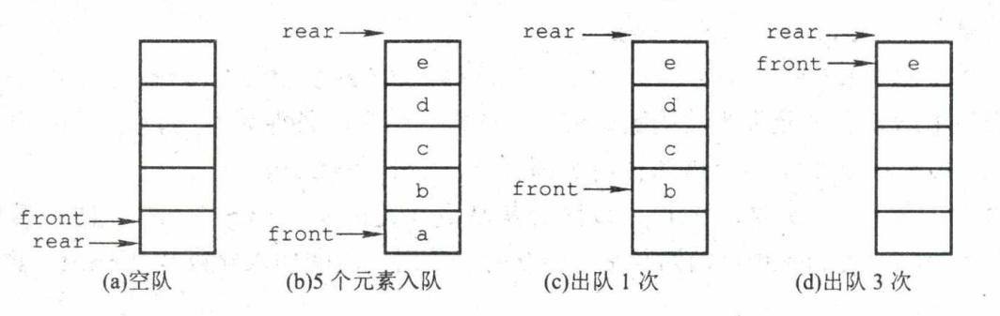
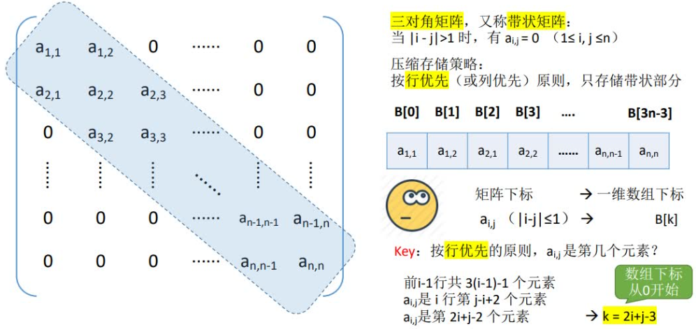
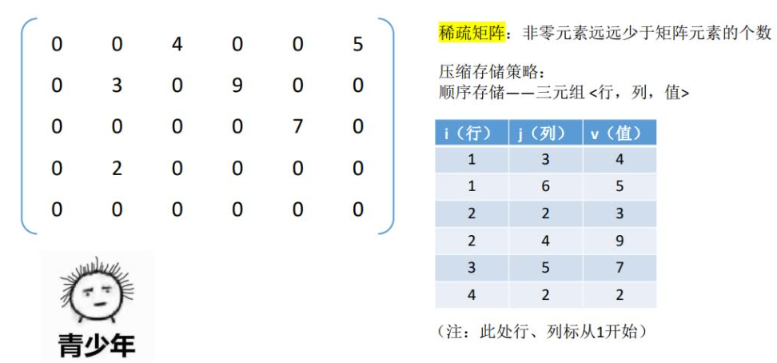
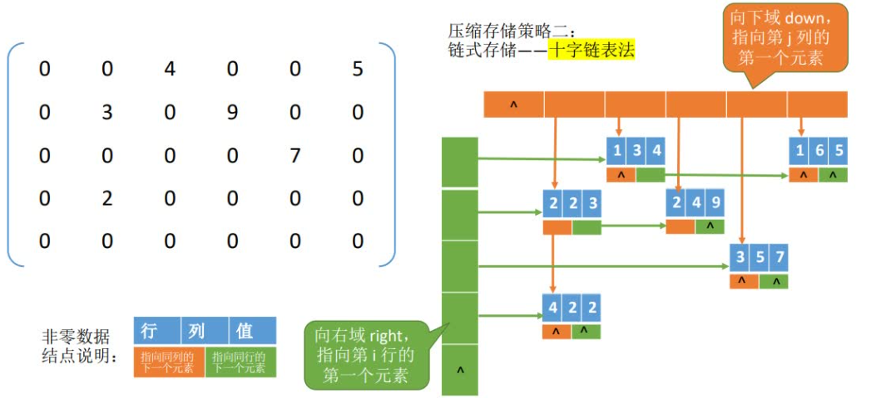

栈
概念
栈(Stack)是只允许在一端进行插入或删除操作的线性表。
首先栈是一种线性表，但限定这种线性表只能在某一端进行插入和删除操作。
- 栈顶：线性表允许进行插入删除的那一端。
- 栈底：固定的，不允许进行插入和删除的另一端。
- 空栈：不含任何元素的空表。

栈的操作特性可以概括为后进先出。
性质
个不同元素进栈，出栈元素不同排列的个数为。上述公式称为卡特兰，可采用数学归纳法证明。
存储结构
顺序存储结构
顺序栈
采用顺序存储的栈称为顺序栈，它利用一组地址连续的存储单元存放自栈底到栈顶的数据元素，同时附设一个指针(top)指示当前栈顶元素的位置。
在这样的设计下，入栈与出栈操作就分别对应在数组尾部添加元素与删除元素，时间复杂度都为 。
using namespace std;
#define MaxSize 50 //定义栈中元素的最大个数
typedef struct {
//存放栈中元素
int data[MaxSize];
//栈顶指针
int top;
} SqStack;
// 初始化栈
void InitStack(SqStack &S) {
S.top = -1;
}
// 判断栈空
bool StackEmpty(SqStack S) {
return S.top < 0;
}
// 入栈
bool Push(SqStack &S, int x) {
if (S.top == MaxSize - 1) {
return false;
}
S.data[++S.top] = x;
return true;
}
// 出栈
bool Pop(SqStack &S, int &x) {
if (S.top < 0) {
return false;
}
x = S.data[S.top--];
return true;
}栈和队列的判空、判满条件，会因实际给的条件不同而变化，上面的代码实现只是在栈顶指针设定的条件下的相应方法，而其他情况则需具体问题具体分析。
这里
top指向的是栈顶元素，所以进栈操作为S .data [++S . top] =x，出栈操作为x=S.data[S.top--]。若栈顶指针初始化为
S.top=0，即top指向的是栈顶元素的下一位置，则入栈操作变为S. data [S. top++] =x；出栈操作变为x=S. data [--S . top]。相应的栈空、栈满条件也会发生变化。
共享栈
利用栈底位置相对不变的特性，可让两个顺序栈共享一个一维数组空间，将两个栈的栈底分别设置在共享空间的两端，两个栈顶向共享空间的中间延伸。
两个栈的栈顶指针都指向栈顶元素，top0 =- 1时0号栈为空，top1 = MaxSize时1号栈为空；仅当两个栈顶指针相邻top1 - top0 = 1时，判断为栈满。当0号栈进栈时top0先加1再赋值，1号栈进栈时top1先减1再赋值；出栈时则刚好相反。
共享栈是为了更有效地利用存储空间，两个栈的空间相互调节，只有在整个存储空间被占满时才发生上溢。
其存取数据的时间复杂度均为，对存取效率没有什么影响。
using namespace std;
#define MaxSize 50 //定义栈中元素的最大个数
typedef struct {
//存放栈中元素
int data[MaxSize];
//0号栈栈顶指针
int top0;
//号栈栈顶指针
int top1;
} SqStack;
// 初始化栈
void InitStack(SqStack &S) {
S.top0 = -1;
S.top1 = MaxSize;
}
// 判断栈空
bool Stack0Empty(SqStack S) {
return S.top0 < 0;
}
bool Stack1Empty(SqStack S) {
return S.top1 == MaxSize;
}
// 入栈
bool Push0(SqStack &S, int x) {
if (S.top0 + 1 == S.top1) {
return false;
}
S.data[++S.top0] = x;
return true;
}
bool Push1(SqStack &S, int x) {
if (S.top0 + 1 == S.top1) {
return false;
}
S.data[--S.top1] = x;
return true;
}
// 出栈
bool Pop0(SqStack &S, int &x) {
if (S.top0 < 0) {
return false;
}
x = S.data[S.top0--];
return true;
}
bool Pop1(SqStack &S, int &x) {
if (S.top1 == MaxSize) {
return false;
}
x = S.data[S.top1++];
return true;
}链式存储结构
采用链式存储的栈称为链栈，链栈的优点是便于多个栈共享存储空间和提高其效率，且不存在栈满上溢的情况。
通常采用单链表实现，并规定所有操作都是在单链表的表头进行的。
采用链式存储，便于结点的插入与删除。链栈的操作与链表类似，入栈和出栈的操作都在链表的表头进行。
将链表头部作为栈顶的一端，可以避免在实现数据 “入栈” 和 “出栈” 操作时做大量遍历链表的耗时操作。
对于带头结点和不带头结点的链栈，具体的实现会有所不同。
// 不带头结点实现
using namespace std;
#define MaxSize 50 //定义栈中元素的最大个数
typedef struct LinkNode {
int data;
struct LinkNode *next;
} *LiStack;
// 初始化栈
void InitStack(LiStack &S) {
S = nullptr;
}
// 判断栈空
bool StackEmpty(LiStack S) {
return S == nullptr;
}
// 入栈
void Push(LiStack &S, int x) {
LinkNode *node;
node = new LinkNode();
node->data = x;
node->next = S;
S = node;
}
// 出栈
bool Pop(LiStack &S, int &x) {
if (StackEmpty(S)) {
return false;
} else {
LinkNode *p = S;
x = p->data;
S = p->next;
delete p;
return true;
}
}// 带头结点实现
using namespace std;
#define MaxSize 50 //定义栈中元素的最大个数
typedef struct LinkNode {
int data;
struct LinkNode *next;
} *LiStack;
// 初始化栈
void InitStack(LiStack &S) {
S->next = nullptr;
}
// 判断栈空
bool StackEmpty(LiStack S) {
return S->next == nullptr;
}
// 入栈
void Push(LiStack &S, int x) {
LinkNode *node;
node = new LinkNode();
node->data = x;
node->next = S->next;
S->next = node;
}
// 出栈
bool Pop(LiStack &S, int &x) {
if (StackEmpty(S)) {
return false;
} else {
LinkNode *p = S->next;
x = p->data;
S->next = p->next;
delete p;
return true;
}
}队列
概念
队列(Queue)简称队，也是一种操作受限的线性表，只允许在表的一端进行插入，而在表的另一端进行删除。
-
向队列中插入元素称为入队或进队；
-
删除元素称为出队或离队。
这和我们日常生活中的排队是一致的，最早排队的也是最早离队的，其操作的特性是先进先出。

InitQueue (&Q)：初始化队列，构造一个空队列Q。QueueEmpty (Q)：判队列空，若队列Q为空返回true,否则返回false。EnQueue (&Q, x)：入队，若队列Q未满，将x加入，使之成为新的队尾。DeQueue (&Q, &x)：出队，若队列Q非空，删除队头元素，并用x返回。GetHead(Q,&x)：读队头元素，若队列Q非空，则将队头元素赋值给X。
存储结构
顺序存储结构
顺序存储
队列的顺序实现是指分配一块连续的存储单元存放队列中的元素，并附设两个指针：
- 队头指针
front指向队头元素 - 队尾指针
rear指向队尾元素的下一个位置
队列的顺序存储类型可描述为
#define MaxSize 10
typedef struct {
int data[MaxSize];// 用静态数组存队列
int front, rear;// 队头指针和队尾指针
} SqQueue;- 初始化：
Q.front=Q.rear=0 - 进队：队不满时，先送值到队尾元素，再将队尾指针加1
- 出队：队不空时，先取队头元素值，再将队头指针加1
Q. rear==MaxSize不能作为队列满的条件。下图(d)中，队列中仅有一个元素，但仍满足该条件。这时入队出现“上溢出”，但这种溢出并不是真正的溢出，在 data数组中依然存在可以存放元素的空位置，所以是一种“假溢出”。为了解决这个缺点可以使用循环队列。

循环队列
将顺序队列臆造为一个环状的空间, 即把存储队列元素的表从逻辑上视为一个环，称为循环队列。
当队首指针Q.front=MaxSize-1 后，再前进一个位置就自动到0，这可以利用除法取余运算来实现。
-
初始时：
Q.front = Q.rear = 0 -
队首指针进 1：
Q.front = (Q.front + 1) % MaxSize -
队尾指针进 1：
Q.rear = (Q.rear + 1) % MaxSize -
队列长度：
(Q.rear + MaxSize-Q.front) % MaxSize -
判断队满：
-
牺牲一个单元来区分队空和队满，此时
队满条件：
(Q.rear+1) %MaxSize == Q.front队空条件：
Q.front == Q.rear -
类型中增设一个数据成员，用来表示元素个数，此时
队空条件：
Q.size == 0队满条件：
Q.size == MaxSize -
类型中增设
tag数据成员，用来表示最近进行的操作。删除操作成功时，tag = 0；插入操作成功时，tag = 1。此时，队空条件：
Q.front == Q.rear && tag = 0队满条件：
Q.front == Q.rear && tag = 1
-
以下代码是以牺牲一个单元来区分队空和队满
#define MaxSize 10
typedef struct {
// 用静态数组存队列
int data[MaxSize];
// 队头指针和队尾指针
int front, rear;
} SqQueue;
// 初始化队列
void InitQueue(SqQueue &Q) {
Q.front = Q.rear = 0;
}
// 判断队列是否为空
bool QueueEmpty(SqQueue Q) {
return Q.front == Q.rear;
}
// 入队
bool EnQueue(SqQueue &Q, int x) {
if ((Q.rear + 1) % MaxSize == Q.front) {
return false;
} else {
Q.data[Q.rear] = x;
Q.rear = (Q.rear + 1) % MaxSize;
return true;
}
}
// 出队
bool DeQueue(SqQueue &Q, int &x) {
if (Q.front == Q.rear) {
return false;
} else {
x = Q.data[Q.front];
Q.front = (Q.front + 1) % MaxSize;
return true;
}
}
// 获取队头元素
bool GetHead(SqQueue Q, int &x) {
if (Q.rear == Q.front) {
return false;
} else {
x = Q.data[Q.front];
return true;
}
}队列的链式存储结构
队列的链式表示称为链队列，它实际上是一个同时带有队头指针和队尾指针的单链表。
头指针指向队头结点，尾指针指向队尾结点，即单链表的最后一个结点。
typedef struct LinkNode {
int data;
struct LinkNode *next;
} LinkNode;
typedef struct {
LinkNode *front, *rear;
} LinkQueue;// 带头结点
// 判断队列是否为空
bool IsEmpty(LinkQueue Q) {
return Q.front == Q.rear;
}
// 初始化队列
void InitQueue(LinkQueue &Q) {
// 初始化时 front 和 rear 都指向头结点
LinkNode *node;
node = new LinkNode();
Q.front = Q.rear = node;
Q.front->next = nullptr;
}
// 入队
void EnQueue(LinkQueue &Q, int x) {
LinkNode *s;
s = new LinkNode();
s->data = x;
s->next = nullptr;
Q.rear->next = s;
Q.rear = s;
}
// 出队
bool DeQueue(LinkQueue &Q, int &x) {
if (Q.front == Q.rear) {
return false;
} else {
LinkNode *p = Q.front->next;
x = p->data;
Q.front->next = p->next;
if (Q.rear == p) {
Q.rear = Q.front;
}
delete p;
return true;
}
}// 不带头结点
// 判断队列是否为空
bool IsEmpty(LinkQueue Q) {
return Q.front == nullptr;
}
// 初始化队列
void InitQueue(LinkQueue &Q) {
// 初始化时 front 和 rear 都指向NUll
Q.front = Q.rear = nullptr;
}
// 入队
void EnQueue(LinkQueue &Q, int x) {
LinkNode *s;
s = new LinkNode();
s->data = x;
s->next = nullptr;
if (Q.front == nullptr) {
Q.front = s;
Q.rear = s;
} else {
Q.rear->next = s;
Q.rear = s;
}
}
// 出队
bool DeQueue(LinkQueue &Q, int &x) {
if (Q.front == Q.rear) {
return false;
} else {
LinkNode *p = Q.front->next;
x = p->data;
Q.front->next = p->next;
if (Q.rear == p) {
Q.rear = Q.front = nullptr;
}
delete p;
return true;
}
}双端队列
双端队列是指允许两端都可以进行入队和出队操作的队列。其元素的逻辑结构仍是线性结构。
由此定义还可以衍生出：
- 输出受限的双端队列：允许在一端进行插入和删除，但在另一端只允许插入的双端队列
- 输入受限的双端队列：允许在一端进行插入和删除，但在另一端只允许删除的双端队列
栈和队列的应用
栈在括号匹配中的应用
#include <iostream>
#include <string>
using namespace std;
#define MaxSize 50
typedef struct {
char data[MaxSize];
int top;
} Stack;
void InitStack(Stack &S) {
S.top = -1;
}
bool isEmpty(Stack S) {
return S.top < 0;
}
bool push(Stack &S, char c) {
if (S.top > MaxSize - 1)return false;
S.data[++S.top] = c;
return true;
}
bool Pop(Stack &S, char &c) {
if (isEmpty(S))return false;
c = S.data[S.top--];
return true;
}
bool bracketCheck(string &str) {
Stack S;
// 初始化一个栈
InitStack(S);
for (char i: str) {
// 扫描到左括号就入栈
if (i == '(' || i == '[' || i == '{') {
push(S, i);
} else {
// 判断当前右与栈顶元素是否匹配
char topChar;
// 判断当前右与栈顶元素是否匹配
if (Pop(S, topChar)) {
if ((i == ')' && topChar != '(') || (i == ']' && topChar != '[') || (i == '}' && topChar != '{'))
return false;
}
}
}
return isEmpty(S);
}
int main() {
string str = "({[]})";
cout << bracketCheck(str) << endl;
return 0;
}栈在表达式求值中的应用
https://www.bilibili.com/video/BV1b7411N798?p=29&vd_source=18ba17bb87b1c219c021b5fd3be34461
| 中缀表达式 | 前缀表达式（波兰表达式） | 后缀表达式（逆波兰表达式） |
|---|---|---|
| a+b | ab+ | +ab |
| a+b-c | ab+c- | -+abc |
| a+b-c*d | ab+cd*- | -+ab*cd |
-
后缀表达式的求值
- 从左往右扫描元素，直到处理完所有元素
- 扫描到操作数则压入栈，并回到1；否则执行3
- 若扫描到运算符，则弹出两个栈顶元素，执行相应运算，运算结果压回栈顶，回到1
-
中缀表达式转后缀表达式
初始化一个栈，用于保存暂时还不能确定运算顺序的运算符。从左到右处理各个元素，直到末尾。可能遇到三种情况：
- 遇到操作数。直接加入后缀表达式。
- 遇到界限符。遇到
(直接入栈；遇到)则依次弹出栈内运算符并加入后缀表达式，直到弹出(为止。注意：)不加入后缀表达式。 - 遇到运算符。依次弹出栈中优先级高于或等于当前运算符的所有运算符，并加入后缀表达式，若碰到
(或栈空则停止。之后再把当前运算符入栈。
按上述方法处理完所有字符后，将栈中剩余运算符依次弹出，并加入后缀表达式。
-
中缀表达式的计算
中缀转后缀，后缀表达式求值两个算法的结合
初始化两个栈，操作数栈和运算符栈
-
若扫描到操作数，压入操作数栈
-
若扫描到运算符或界限符，则按照“中缀转后缀”相同的逻辑压入运算符栈（期间也会弹出运算符，每当弹出一个运算符时，就需要再弹出两个操作数栈的栈顶元素并执行相应运算，运算结果再压回操作数栈）
-
栈在递归中的应用
递归是一种重要的程序设计方法。简单地说，若在一个函数、过程或数据结构的定义中又应用了它自身，则这个函数、过程或数据结构称为是递归定义的，简称递归。
递归模型不能是循环定义的，其必须满足下面的两个条件： 递归表达式(递归体)、边界条件(递归出口)。
队列的应用
树的层次遍历和图的广度优先遍历。
队列在计算机系统中的作用：
-
解决主机与外部设备之间速度不匹配的问题
以主机和打印机之间速度不匹配的问题为例。有一个打印数据缓冲区，主机把要打印输出的数据依次写入这个缓冲区，写满后就暂停输出，转去做其他的事情。打印机就从缓冲区中按照 先进先出的原则依次取出数据并打印，打印完后再向主机发出请求。主机接到请求后再向缓冲区 写入打印数据。
-
解决由多用户引起的资源竞争问题
CPU资源的竞争就是一个典型的例子。
特殊矩阵的压缩存储
- 压缩存储：指为多个值相同的元素只分配一个存储空间，对零元素不分配存储空间。其目的是节省存储空间。
- 特殊矩阵：指具有许多相同矩阵元素或零元素，并且这些相同矩阵元素或零元素的分布有一定规律性的矩阵。常见的特殊矩阵有对称矩阵、上(下)三角矩阵、对角矩阵等。
- 特殊矩阵的压缩存储方法：找出特殊矩阵中值相同的矩阵元素的分布规律，把那些呈现规律性分布的、值相同的多个矩阵元素压缩存储到一个存储空间中。
对称矩阵


Tip
二维数组
A[n][n]和A[0...n-1] [O...n-1]的写法是等价的。如果数组写为
A[1...n] [1...n]，则说明指定了从下标1开始存储元素。二维数组元素写为
a[i][j]，注意数组 元素下标 和 通常是从0开始的。矩阵元素通常写为 或 ，注意行号 和列号 $是 从1开始的。
三角矩阵


三对角矩阵

稀疏矩阵
若采用常规的方法存储稀疏矩阵，则相当浪费存储空间，因此仅存储非零元素。但通常非零元素的分布没有规律，所以仅存储非零元素的值是不够的，还要存储它所在的行和列。因此，将非零元素及其相应的行和列构成一个三元组。然后按照某种规律存储这些三元组线性表。
稀疏矩阵压缩存储后便失去了随机存取特性。

Tip
三元组仅存储行，列，值是不够的，因为无法通过这些判断稀疏矩阵的大小。因此还需要保存稀疏矩阵的行数和列数。
稀疏矩阵的三元组表既可以采用数组存储，又可以采用十字链表存储。当存储稀疏矩阵时，不仅要保存三元组表，而且要保存稀疏矩阵的行数、列数和非零元素的个数。
